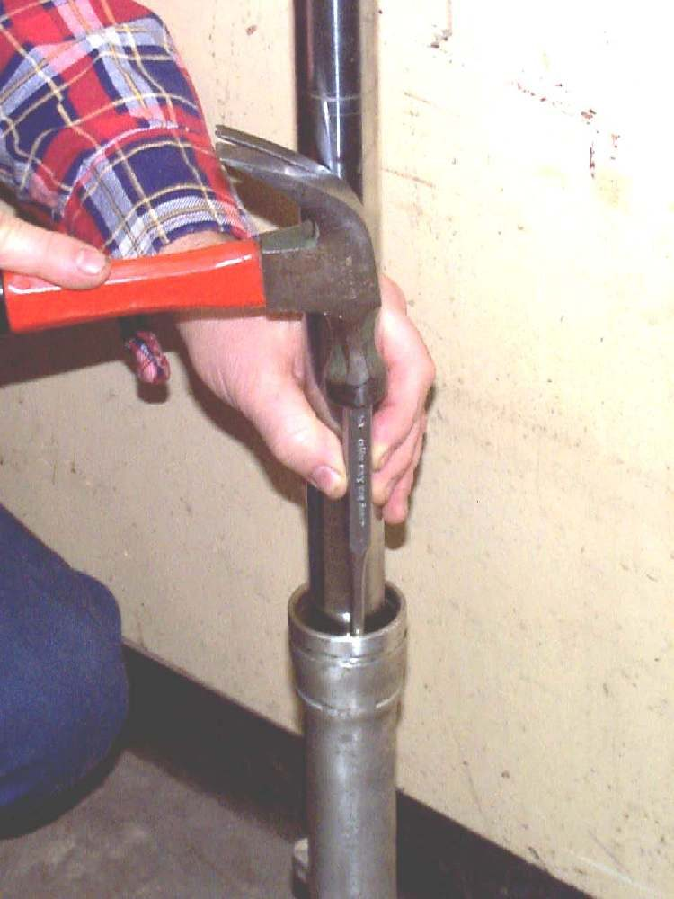

A knock, clunk, squeak or creak from the front when riding over bumps or pushing the forks down. The K-Light 125 manual lists two causes first: a cover rubbing and loose bolts. Other causes are steering head bearing play, worn fork bushes, low oil (the fork reaches its end stop), topping out (the fork extends fully with a clack, from low oil or a broken rebound spring), and dry dust seals that squeak.
Is it safe to ride?
Ride with care while you find it. If the noise is a clunk when braking, or anything is loose, do not ride: see Clunk from the front when braking.
Quick checks first
- Push the forks down with the brake on and listen: does the noise come from the legs, the head tube, the mudguard or the headlight?
- Check mudguard, headlight and cover bolts.
- Look for oil on the tubes.
- Is it a squeak (seal or dry part) or a knock (loose part)?
Diagnose it step by step
1Is a mudguard, headlight, cover or cable rubbing or loose?
- Yes: tighten or fix it. See Check chassis fasteners and Rattling from panels, mudguards or the seat.
- No: go to step 2.
2Are the axle, pinch bolts, caliper bolts and fork clamp bolts tight?
- No: tighten to model torques. Check chassis fasteners.
- Yes: go to step 3.
3With the brake held and the bike rocked, is there a clunk at the head tube?
- Yes: Check the steering head bearings.
- No: go to step 4.
4Is it a squeak when the forks move, with dry or dirty dust seals?
- Yes: Clean fork seals.
- No: go to step 5.
5Is it a knock at full compression (big bumps) or a clack at full extension (lifting the front or after a dip)?
- Full compression: low oil or tired springs. See Front forks bottom out.
- Full extension: low oil or a broken rebound spring. Workshop: Replace fork oil and seals.
- Neither: go to step 6.
6Lift the front wheel. Can you move a fork slider forward and back on its tube?
- Yes: worn fork bushes. Replace fork oil and seals, with new bushes.
- No: have a workshop check inside the forks.
Causes, most likely first
| Cause | How to confirm | Fix |
|---|---|---|
| Cover, mudguard or headlight rubbing | Noise moves when you hold the part | Tighten or pad the part |
| Loose bolts | Fastener moves | Check chassis fasteners |
| Dry dust seals | Squeak as forks move | Clean fork seals |
| Steering head play | Clunk at head tube | Check the steering head bearings |
| Low oil, topping or bottoming out | Knock at end of travel | Replace fork oil and seals |
| Worn fork bushes | Slider moves on tube | Replace fork oil and seals |